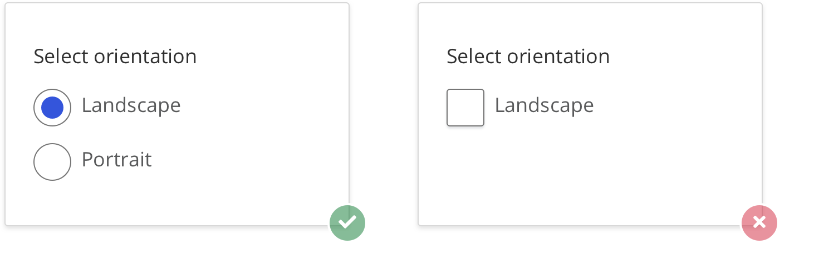
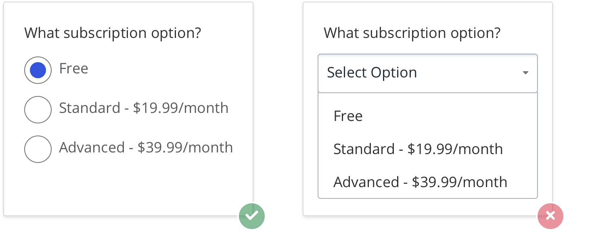
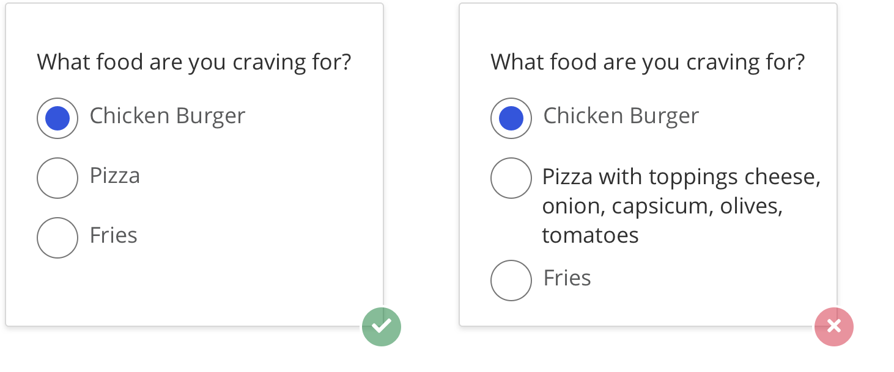

Do's and Don't
Default selection
It is better to have a selected radio button by default, given that people cannot deselect and set the button back to its original state once one has been selected. A default selection sets the correct user expectation.

Should I use a Check Box instead of Radio Buttons?
Use radio buttons if the meaning of the empty checkbox isn’t obvious. In example below, the choices are opposites so radio buttons are the better choice for this option.
Radio Buttons or Dropdown?
Use radio buttons when you want user to read all options. The options are unfamiliar to user and there is less or no chance that he can predict them.
For label text
For radio buttons label, try to be consistent. Make sure that all the items are either a sentence, phrase, or word. Try to avoid some options being sentences and others being single words. Using a combination makes it inconsistent hence not a good UI practice.
